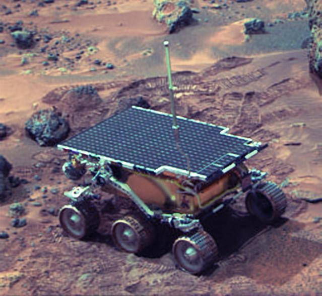
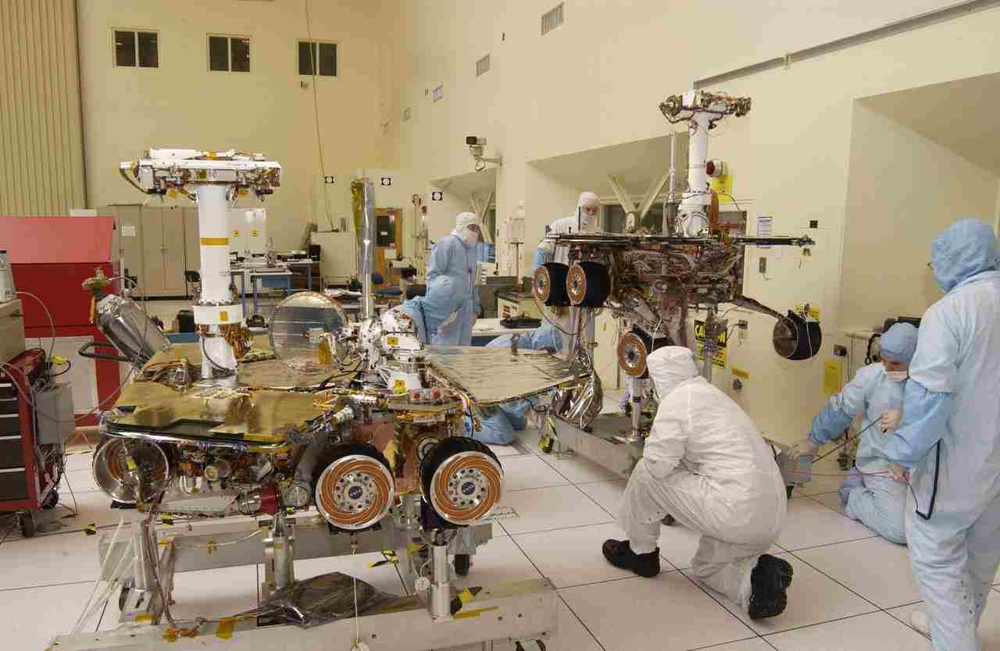
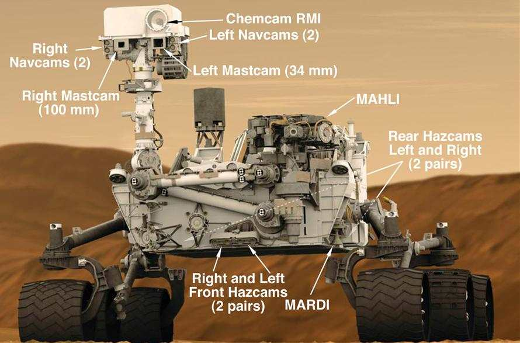
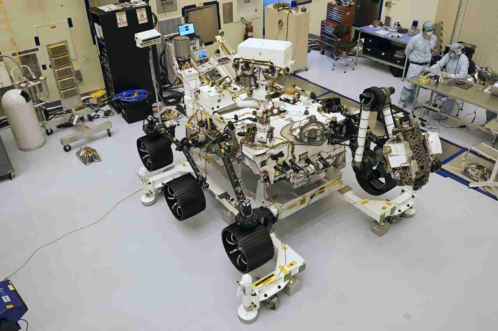

Before I begin, I figured I would give a brief description as to what this project is about, and what it entails. This is a project focusing solely on the mars rovers, and even then, likely not all of them. It exists to discuss the mars rovers, their intended functions and specialities, goals, accomplishments, and so on, in limited chronological order - doing the rovers from earliest to latest, but describing a rover and some of its noteworthy aspects before going to the next one.

The Sojourner was part of the mars-pathfinder mission - It was sent there to test if, in the words of one of my sources, "...to see if it was even possible to operate a wheeled vehicle there." - astronomy.com
It also possessed a good amount of scientific instruments, allowing it to provide good, albeit limited, scientific data, like so it could do so in the event it was possible.
The Sojourner rover launched in 1996 on December 4th, and successfully landed July 7th, 1997, in an area called the Ares Vallis. This location was chosen for numerous reasons, such as it being flat and easy for the rover to navigate, but also the site of an ancient flood, meaning that there would be plenty of samples of various types of martian rocks within close distance.
Ignoring the obvious, albeit impressive fact that the Sojouner managed to prove that a rover can indeed survive on mars long enough to provide scientific data, or the fact it was the first rover to actually survive the landing and thus function on mars, it also had some other noteworthy accomplishments. The sojourner also managed to take a total of 550 pictures while on mars, and according to marsquestonline.org, it "...analyzed the composition of about a dozen rocks and soil samples."
The Sojourner was not a large rover, and according to astronomy.com, it was 11 inches tall, and 25 inches long, being comparable to a microwave. It was also comparable to a microwave in terms of weight, being only 25 pounds. On its back, it had solar panels, which powered it, and on its sides it had 6 spiked wheels, with 3 on its left and right sides. In terms of its instruments, according to JPL.nasa.gov, it had the two previously mentioned imaging cameras, an alpha/proton/xray spectrometer (APXS), the image for the mars pathfinder (IMP), and the atmospheric structure instrument/meteorology package (ASI/MET).

The mission of the Spirit and Opportunity rovers was much more advanced than the sojourner, considering it was now known to be possible for a rover to function on the red planet. Both of the identicle twin rovers were a part of the Mars Exploration Rover mission - being intended to discern the history of water on mars, and thus help determine if life was possible, or even existed on mars in the past. Or, in simpler terms, both rovers were sent to mars to look for signs of past water, as Nasa's own page puts it.
The spirit was launched on june 10th, 2003, while the opportunity was launched on july 7th, 2003. In turn, spirit landed on mars on january 3rd, 2004, while opportunity landed on january 24th, 2004. The twin rovers landed at opposite sides of mars, in areas with signs of water in the past, with spirit landing in the Gusev crater, and Opportunity landing at the Meridiana Planum.
The curiosity and opportunity mars rovers managed to collectively go the furthest distance for off-earth roving record (or at least the opportunity does), at 45.16km. Opportunity was also the longest-living mars rover, lasting 14 years and 136 days. Alongside that, the twin rovers managed to confirm that there was water on the surface of mars at some point in the past. The spirit managed to take 124,838 during its 6-year lifespan, while the opportunity managed to take 217,594 photos of mars during its 14+ year lifespan.
Again, ignoring the fact that both drones were made to be identicle, some noteworthy designs and features were that the rovers had 6 wheels, with three on each side, a stretched pentagon body with solar panels on their back, and a 'head' at the center-front of their body, right next to the vertex. In terms of instruments, both mars rovers had panoramic cameras on their 'head', a pancam calibration target on their deck, a magnet array at their deck's front, and a robotic arm at the rover's front that had several tools, such as the rock abrasion tool, the alpha particle x-ray spectrometer, the Mossbauer spectrometer, the microscopic imager, and finally, a minature thermal emission spectrometer.

The curiosity, being the most ambitious and most capable rover sent to mars, according to Nasa's own website, was sent to determine if mars had the right conditions for microbial life, even if only at some point in its past. It was a part of Nasa's Mars science laboratory mission.
The curiosity was launched November 26th, 2011, and landed August 6th, 2012, at the Gale crater. This site was likely chosen due to the fact that at the time, it had quite a few signs that life could have existed there, in the past.
The curiosity rover managed to complete its mission within a year, surprisingly. Its tools help to determine that there was evidence of past habitable environments on mars. It is also, at least at the time of this page being made (2025) one of the few rovers on mars that is still active. Due to its status as currently active, some feats and accomplishments can only be given in current measures that will likely be exceeded given time, but according to a source in 2021, it has taken nearly 800,000 images over its mars lifespan, and according to nasa from a 2022 article, it has driven nearly 18 miles. (Now, since this site is being made in 2025, it is doubtless that since the rover is still active, both of these feats have been exceeded, but that is the price I pay for listing the feats of rovers that are still active. Do not expect this site to be updated in the years to come to account for this, however.)
The curiosity rover, being among the newer of the rovers, alongside the more complicated, has a lot more unique and interesting features to describe. To start with, it still has the standard rover design that its predecessors had - 6 wheels, 3 on each side, and a 'head' on the right side of its front. What is more interesting about this rover, however, is that in terms of instruments, it had quite a few. It had 2 navcams, a mast cam, and a chem cam on it's 'head', and a environmental monitoring station on its 'neck', and its lower portions were no less well equipped. On that same back, it has a RAD, and a DAN in its rear corner, alongside a UHF Antenna, a SAM inside it, a CheMin also inside of it. And finally, on its front and back, it has a front and rear hazecam, respectively, and a Mardi on its front, alongside a robotic arm, with plenty of tools of its own. For brevity's sake, again, I will not be writing out each acronym on its own, seeing as I would be here for a while. However, if you absolutely must know each and every single one, look at the source in the footer referring to the curiosity's instruments.

The Perserverance Rover has perhaps one of the most complicated missions yet, with only the Curiositiy rover coming close. The perserverance was meant to seek signs of ancient life, and to also take samples of rocks and regolith, for eventual earth return.
The Perserverance rover was launched on july 30th, 2020, and landed on mars on feburary 18th, 2021, in the Jezero Crater on mars.
Being the only other mars rover, besides curiosity, that Nasa currently has on mars that is also still active, Perserverance will likely surpass whatever its current achievements are, given enough time. This is especially the case, since the rover is intended to also return to earth, with rocks and regolith for study, which could provide an immense amount of scientific data. As of Nasa's site (4/14/2025), the rover seems to have driven a total of 20.86 miles, assuming I am reading the map correctly. As of december 6th, 2022, the perserverance has also managed to take a total of 151,944 pictures total, which is respectable considering it hasn't been on mars as long as the other rovers with higher counts, but it is also doubtlessly higher, considering that was at least 3 years ago, and again, the rover is one of the two still currently active.
The Perserverance has quite a few unique design choices, but interestingly enough, it was based off of the still-active curiosity rover. More importantly, you can guess by now, the rover has 6 wheels, with 3 on either side, and a 'head' on its right side. Like the curiosity, it also has plenty of instruments. It has a mastcam-z (z, as in 'zoom function'), a supercam to examine rocks and soil with a laser, SHERLOC (as in S, H, E, R, L, O, and finally, C), PIXL (as in P, I, x, L), MEDA (M, E, D, A), MOXIE (M, O, X, I, E), and finally, RIMFAX (R, I, M, F, A, X). Much like with curiosity, I'm not writing out the acronyms for the instruments, and again, if you want to know what they stand for, they are in the sources section in the footer, but as I stated before, the Perserverance has a similar number of instruments as the Curiosity, which makes sense if you view it through the lens of it being an evolution of what started with the Curiosity.